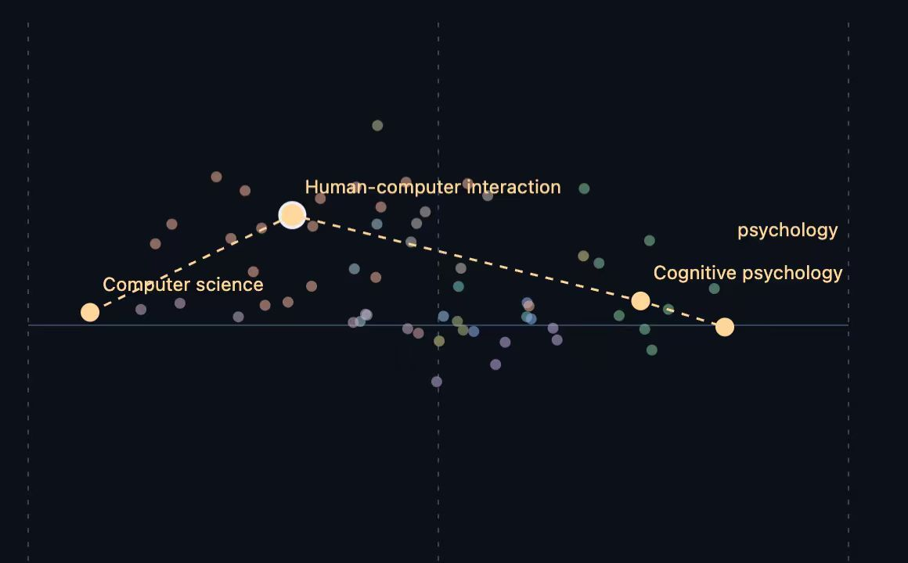

of videos reported as regrettable by volunteers in Mozilla’s study had been recommended by YouTube.
Mozilla Foundation · 2021An invitation to think otherwise
Keep your curiosity.
Widen your world.
OtherWise turns familiar interests into small steps toward new topics.
A Chrome extension built to help you explore for yourself.
A new connection, beside your everyday browsing
Your search
What can AI
help us create?
AI tools and creative work
IDEAS YOU ALREADY KNOWWriting with AI
A FAMILIAR STARTING POINTCreative tools
Start familiar.Follow a connection.Choose your next step.
01 / The starting point
A familiar feed.
A smaller world.
We started with a question: when recommendations keep returning to what we already like, how do we discover what we don't know to look for?
U.S. adults regularly got news on TikTok in Pew’s 2025 survey, up from 3% in 2020.
Pew Research Center · 2025Trust can replace curiosity.
A study of knowledge workers linked higher confidence in AI to less reported critical thinking.
Microsoft Research / CHI · 2025These studies motivated our idea. They do not establish that OtherWise improves critical thinking or reduces echo chambers.
02 / The idea
What if AI opened
the next door?
Start with something you care about.
Find a connection you haven't considered.
Choose where to go yourself.
Small, meaningful steps make a new field easier to approach. The goal is to support your curiosity and leave the thinking to you.
03 / The solution
A little wider,
right in your browser.
OtherWise is a Chrome extension for discovering meaningful topics beyond your current interests. It suggests a next step; you decide whether to take it.
Browse as usual
Search, read, and watch the way you already do. OtherWise fits into your browser.
Choose what to keep
Topic matching happens on your device. Review the suggestions and confirm your interests.
Find a nearby idea
Discover related topics just beyond your familiar interests. Adjust how far you want to explore.
Make it your own
Follow a topic into a new search. Your interest map gives you a view of what you choose to explore.
A small step, made concrete
One interest.
A new direction.
Choose a starting point to see how a familiar topic can connect to a different field.
Illustrative paths · not live recommendations
Your starting point
AI tools
A meaningful connection
Human–AI interaction
A different field
Psychology
How we work with AI leads to questions about attention, judgment, and human behavior.
04 / From idea to engine
Close enough to connect.
New enough to surprise.
We compare topics by meaning and look just beyond the familiar region around your interests. Context helps reveal connections that a simple title match can miss.

A connection, with a reason.
In our pitch example, human–computer interaction becomes a bridge between computer science and psychology.
- 01Keep each interest as its own starting point.
- 02Look in an adjustable band beyond the familiar.
- 03Favor a mix of topics over repeated variations.
Project experiment diagrams from our pitch. Topic distance is a model of semantic novelty, not a measure of a person's knowledge.
05 / Privacy by design
Your interests.
Your choice.
Browsing titles are matched on your device. Only the interests you explicitly save are sent to the recommendation service.
On your device
Browse · Match topics · Confirm
Only saved topic keywords
OtherWise
Find a nearby idea
Optional history access
Choose whether to use browsing-based topic suggestions.
Sensitive sites skipped
Email, banking, and other sensitive sites are excluded from topic collection.
Keep control
Review suggestions, skip topics, and clear saved interests.
06 / Where we go next
A working prototype.
A wider possibility.
The extension and recommendation engine are our first step. Next, we want to learn whether small discoveries turn into lasting exploration.
The first exploration loop
- Chrome side panel
- On-device topic matching
- Nearby-topic suggestions
- Interest universe visualization
More ways to connect
- Compare universes with friends
- Topic discovery in more languages
- Refine the exploration experience
Learn from real use
- A two-week pilot
- Study whether interests widen
- Prepare for a Chrome Web Store launch
Prototype stage. The pilot, social features, and Web Store launch are planned work.
Think Otherwise.
Most of your universe
is still unexplored.
One small step can show you something new.
Explore the project